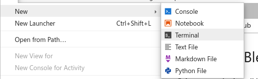
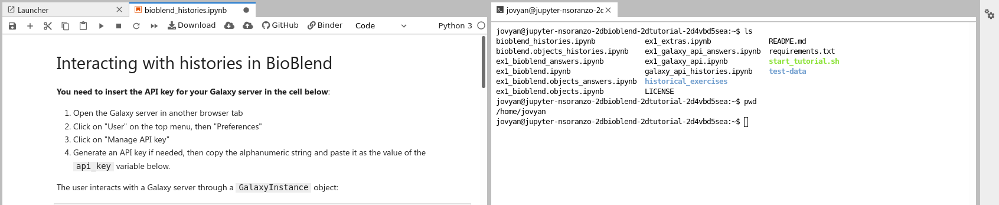
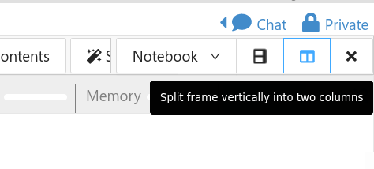
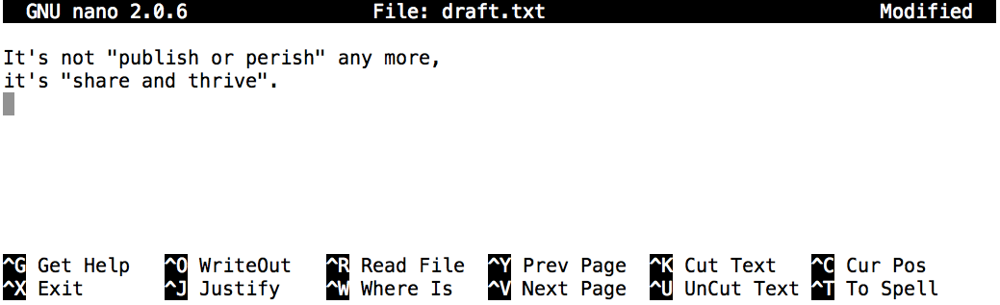

CLI basics in Galaxy
 The Carpentries
The Carpentries Helena Rasche
Helena Rasche Bazante Sanders
Bazante SandersOverview
Questions:Objectives:
What is a command shell and why would I use one?
How can I move around on my computer?
How can I see what files and directories I have?
How can I specify the location of a file or directory on my computer?
How can I create, copy, and delete files and directories?
How can I edit files?
Requirements:
Explain how the shell relates to the keyboard, the screen, the operating system, and users’ programs.
Explain when and why command-line interfaces should be used instead of graphical interfaces.
Explain the similarities and differences between a file and a directory.
Translate an absolute path into a relative path and vice versa.
Construct absolute and relative paths that identify specific files and directories.
Use options and arguments to change the behaviour of a shell command.
Demonstrate the use of tab completion and explain its advantages.
Create a directory hierarchy that matches a given diagram.
Create files in that hierarchy using an editor or by copying and renaming existing files.
Delete, copy and move specified files and/or directories.
Time estimation: 1 hourLevel: Introductory IntroductorySupporting Materials:Last modification: Oct 19, 2021
 Questions:
Questions:
Best viewed in a Jupyter Notebook
This tutorial is best viewed in a Jupyter notebook! You can load this notebook in Jupyter on one of the UseGalaxy.* servers
Launching the notebook in Jupyter in Galaxy
- Instructions to Launch JupyterLab
- Open a Terminal in JupyterLab with File -> New -> Terminal
- Run
wget https://training.galaxyproject.org/training-material/topics/data-science/tutorials/cli-basics/tutorial.md.ipynb- Select the notebook that appears in the list of files on the left.
Downloading the notebook
- Right click this link: tutorial.ipynb
- Save Link As..
This tutorial will walk you through the basics of how to use the Unix command line.
comment Comment
This tutorial is significantly based on the Carpentries “The Unix Shell” lesson, which is licensed CC-BY 4.0. Adaptations have been made to make this work better in a GTN/Galaxy environment.
Agenda
In this tutorial, we will cover:
Background
Humans and computers commonly interact in many different ways, such as through a keyboard and mouse, touch screen interfaces, or using speech recognition systems. The most widely used way to interact with personal computers is called a graphical user interface (GUI). With a GUI, we give instructions by clicking a mouse and using menu-driven interactions.
While the visual aid of a GUI makes it intuitive to learn, this way of delivering instructions to a computer scales very poorly. Imagine the following task: for a literature search, you have to copy the third line of one thousand text files in one thousand different directories and paste it into a single file. Using a GUI, you would not only be clicking at your desk for several hours, but you could potentially also commit an error in the process of completing this repetitive task. This is where we take advantage of the Unix shell. The Unix shell is both a command-line interface (CLI) and a scripting language, allowing such repetitive tasks to be done automatically and fast. With the proper commands, the shell can repeat tasks with or without some modification as many times as we want. Using the shell, the task in the literature example can be accomplished in seconds.
Setup
Before we do anything, we’ll get you setup with some test data which can help guide your exploration of the CLI.
cd ~/
mkdir -p Desktop/
cd Desktop/
wget -c https://github.com/swcarpentry/shell-novice/raw/2929ba2cbb1bcb5ff0d1b4100c6e58b96e155fd1/data/shell-lesson-data.zip
unzip -u shell-lesson-data.zip
The Shell
The shell is a program where users can type commands. With the shell, it’s possible to invoke complicated programs like climate modeling software or simple commands that create an empty directory with only one line of code. The most popular Unix shell is Bash (the Bourne Again SHell — so-called because it’s derived from a shell written by Stephen Bourne). Bash is the default shell on most modern implementations of Unix and in most packages that provide Unix-like tools for Windows.
Using the shell will take some effort and some time to learn. While a GUI presents you with choices to select, CLI choices are not automatically presented to you, so you must learn a few commands like new vocabulary in a language you’re studying. However, unlike a spoken language, a small number of “words” (i.e. commands) gets you a long way, and we’ll cover those essential few today.
The grammar of a shell allows you to combine existing tools into powerful pipelines and handle large volumes of data automatically. Sequences of commands can be written into a script, improving the reproducibility of workflows.
In addition, the command line is often the easiest way to interact with remote machines and supercomputers. Familiarity with the shell is near essential to run a variety of specialized tools and resources including high-performance computing systems. As clusters and cloud computing systems become more popular for scientific data crunching, being able to interact with the shell is becoming a necessary skill. We can build on the command-line skills covered here to tackle a wide range of scientific questions and computational challenges.
Let’s get started.
When the shell is first opened, you are presented with a prompt, indicating that the shell is waiting for input.
$
The shell typically uses $ as the prompt, but may use a different symbol.
In the examples for this lesson, we will not include this prompt!
Most importantly: when typing commands, either from these lessons or from other sources, do not type the prompt, only the commands that follow it. Also note that after you type a command, you have to press the Enter key to execute it.
The prompt is followed by a text cursor, a character that indicates the position where your typing will appear. The cursor is usually a flashing or solid block, but it can also be an underscore or a pipe. You may have seen it in a text editor program, for example.
So let’s try our first command, ls which is short for listing.
hands_on Open a Jupyter Terminal
This tutorial will let you accomplish almost everything from this view, running code in the cells below directly in the training material. You can choose between running the code here, or opening up a terminal tab in which to run it.
Here are some instructions for how to do this on various environments.
Jupyter on UseGalaxy.* and MyBinder.org
Use the File → New → Terminal menu to launch a terminal.

Disable “Simple” mode in the bottom left hand corner, if it activated.
Drag one of the terminal or notebook tabs to the side to have the training materials and terminal side-by-side

CoCalc
Use the Split View functionality of cocalc to split your view into two portions.

Change the view of one panel to a terminal


This command will list the contents of the current directory:
ls
tip Command not found
If the shell can’t find a program whose name is the command you typed, it will print an error message such as:
code-in Input: Bash
$ kscode-out Output
ks: command not foundThis might happen if the command was mis-typed or if the program corresponding to that command is not installed.
Nelle’s Pipeline: A Typical Problem
Nelle Nemo, a marine biologist,
has just returned from a six-month survey of the
North Pacific Gyre,
where she has been sampling gelatinous marine life in the
Great Pacific Garbage Patch.
She has 1520 samples that she’s run through an assay machine to measure the relative abundance
of 300 proteins.
She needs to run these 1520 files through an imaginary program called goostats.sh she inherited.
On top of this huge task, she has to write up results by the end of the month so her paper
can appear in a special issue of Aquatic Goo Letters.
The bad news is that if she has to run goostats.sh by hand using a GUI,
she’ll have to select and open a file 1520 times.
If goostats.sh takes 30 seconds to run each file, the whole process will take more than 12 hours
of Nelle’s attention.
With the shell, Nelle can instead assign her computer this mundane task while she focuses
her attention on writing her paper.
The next few lessons will explore the ways Nelle can achieve this.
More specifically,
they explain how she can use a command shell to run the goostats.sh program,
using loops to automate the repetitive steps of entering file names,
so that her computer can work while she writes her paper.
As a bonus, once she has put a processing pipeline together, she will be able to use it again whenever she collects more data.
In order to achieve her task, Nelle needs to know how to:
- navigate to a file/directory
- create a file/directory
- check the length of a file
- chain commands together
- retrieve a set of files
- iterate over files
- run a shell script containing her pipeline
Navigating Files and Directories
The part of the operating system responsible for managing files and directories is called the file system. It organizes our data into files, which hold information, and directories (also called ‘folders’), which hold files or other directories.
Several commands are frequently used to create, inspect, rename, and delete files and directories. To start exploring them, we’ll go to our open shell window.
First, let’s find out where we are by running a command called pwd
(which stands for ‘print working directory’). Directories are like places, at any time
while we are using the shell, we are in exactly one place called
our current working directory. Commands mostly read and write files in the
current working directory, i.e. ‘here’, so knowing where you are before running
a command is important. pwd shows you where you are:
pwd
Try running it now.
tip Home Directory Variation
The home directory path will look different on different operating systems.
Linux OSX Jupyter (UseGalaxy/Binder) CoCalc /home/nelle/Users/nelle/home/joyvan/projects/<id>On Windows, it will be similar to
C:\Documents and Settings\nelleorC:\Users\nelle. (Note that it may look slightly different for different versions of Windows.) In future examples, we’ve used Mac output as the default - Linux and Windows output may differ slightly but should be generally similar.We will also assume that your
pwdcommand returns your user’s home directory. Ifpwdreturns something different, you may need to navigate there usingcdor some commands in this lesson will not work as written. See Exploring Other Directories for more details on thecdcommand.
To understand what a ‘home directory’ is, let’s have a look at how the file system as a whole is organized. For the sake of this example, we’ll be illustrating the filesystem on our scientist Nelle’s computer. After this illustration, you’ll be learning commands to explore your own filesystem, which will be constructed in a similar way, but not be exactly identical.
On Nelle’s computer, the filesystem looks like this:

At the top is the root directory
that holds everything else.
We refer to it using a slash character, /, on its own;
this character is the leading slash in /Users/nelle.
Inside that directory are several other directories:
bin (which is where some built-in programs are stored),
data (for miscellaneous data files),
Users (where users’ personal directories are located),
tmp (for temporary files that don’t need to be stored long-term),
and so on.
We know that our current working directory /Users/nelle is stored inside /Users
because /Users is the first part of its name.
Similarly,
we know that /Users is stored inside the root directory /
because its name begins with /.
Slashes
Notice that there are two meanings for the
/character. When it appears at the front of a file or directory name, it refers to the root directory. When it appears inside a path, it’s just a separator.
Underneath /Users,
we find one directory for each user with an account on Nelle’s machine,
her colleagues imhotep and larry.

The user imhotep’s files are stored in /Users/imhotep,
user larry’s in /Users/larry,
and Nelle’s in /Users/nelle. Because Nelle is the user in our
examples here, therefore we get /Users/nelle as our home directory.
Typically, when you open a new command prompt, you will be in
your home directory to start.
Now let’s learn the command that will let us see the contents of our
own filesystem. We can see what’s in our home directory by running ls:
ls
ls prints the names of the files and directories in the current directory.
We can make its output more comprehensible by using the -F option
(also known as a switch or a flag),
which tells ls to classify the output
by adding a marker to file and directory names to indicate what they are:
- a trailing
/indicates that this is a directory @indicates a link*indicates an executable
Depending on your default options, the shell might also use colors to indicate whether each entry is a file or directory.
ls -F
Here, we can see that our home directory contains only sub-directories. Any names in our output that don’t have a classification symbol are plain old files.
tip Real Terminal Tip: Clearing your terminal
If your screen gets too cluttered, you can clear your terminal using the
clearcommand. You can still access previous commands using ↑ and ↓ to move line-by-line, or by scrolling in your terminal.
Getting help
ls has lots of other options. There are two common ways to find out how
to use a command and what options it accepts:
- We can pass a
--helpoption to the command, - We can read its manual with
man
The --help option
Many bash commands, and programs that people have written that can be
run from within bash, support a --help option to display more
information on how to use the command or program.
ls --help
tip Unsupported command-line options
If you try to use an option (flag) that is not supported,
lsand other commands will usually print an error message similar to:code-in Input: Bash
ls -jcode-out Output
ls: invalid option -- 'j' Try 'ls --help' for more information.
The man command
The other way to learn about ls is to type
code-in Input: Bash
$ man ls
code-out Output
LS(1) User Commands LS(1) NAME ls - list directory contents SYNOPSIS ls [OPTION]... [FILE]... DESCRIPTION List information about the FILEs (the current directory by default). Sort entries alphabetically if none of -cftuvSUX nor --sort is specified. Mandatory arguments to long options are mandatory for short options too. -a, --all do not ignore entries starting with . -A, --almost-all do not list implied . and .. --author with -l, print the author of each file -b, --escape print C-style escapes for nongraphic characters --block-size=SIZE with -l, scale sizes by SIZE when printing them; e.g., '--block-size=M'; see SIZE format below -B, --ignore-backups do not list implied entries ending with ~ -c with -lt: sort by, and show, ctime (time of last modification of file status information); with -l: show ctime and sort by name; otherwise: sort by ctime, newest first -C list entries by columns --color[=WHEN] colorize the output; WHEN can be 'always' (default if omitted), 'auto', or 'never'; more info below
This command will turn your terminal into a page with a description
of the ls command and its options.
To navigate through the man pages,
you may use ↑ and ↓ to move line-by-line,
or try B and Spacebar to skip up and down by a full page.
To search for a character or word in the man pages,
use / followed by the character or word you are searching for.
Sometimes a search will result in multiple hits.
If so, you can move between hits using N (for moving forward) and
Shift+N (for moving backward).
To quit the man pages, press Q.
tip Manual pages on the web
Of course, there is a third way to access help for commands: searching the internet via your web browser. When using internet search, including the phrase
unix man pagein your search query will help to find relevant results.GNU provides links to its manuals including the core GNU utilities, which covers many commands introduced within this lesson.
question Exploring More
lsFlagsYou can also use two options at the same time. What does the command
lsdo when used with the-loption? What about if you use both the-land the-hoption?Some of its output is about properties that we do not cover in this lesson (such as file permissions and ownership), but the rest should be useful nevertheless.
solution Solution
The
-loption makeslsuse a long listing format, showing not only the file/directory names but also additional information, such as the file size and the time of its last modification. If you use both the-hoption and the-loption, this makes the file size ‘human readable’, i.e. displaying something like5.3Kinstead of5369.
question Listing in Reverse Chronological Order
By default,
lslists the contents of a directory in alphabetical order by name. The commandls -tlists items by time of last change instead of alphabetically. The commandls -rlists the contents of a directory in reverse order. Which file is displayed last when you combine the-tand-rflags? Hint: You may need to use the-lflag to see the last changed dates.solution Solution
The most recently changed file is listed last when using
-rt. This can be very useful for finding your most recent edits or checking to see if a new output file was written.
# Explore the possible solutions here!
Exploring Other Directories
Not only can we use ls on the current working directory,
but we can use it to list the contents of a different directory.
Let’s take a look at our current directory by running ls -F ~/,
i.e.,
the command ls with the -F option and the argument /.
The argument ~/ tells ls that
we want a listing of something other than our current working directory:
ls -F ~/
As you may now see, using a bash shell is strongly dependent on the idea that your files are organized in a hierarchical file system. Organizing things hierarchically in this way helps us keep track of our work: it’s possible to put hundreds of files in our home directory, just as it’s possible to pile hundreds of printed papers on our desk, but it’s a self-defeating strategy.
Now that we know the shell-lesson-data directory is located in current working directory, we
can do two things.
First, we can look at its contents, using the same strategy as before, passing
a directory name to ls:
ls -F shell-lesson-data
Second, we can actually change our location to a different directory, so we are no longer located in our home directory.
The command to change locations is cd followed by a
directory name to change our working directory.
cd stands for ‘change directory’,
which is a bit misleading:
the command doesn’t change the directory;
it changes the shell’s idea of what directory we are in.
The cd command is akin to double clicking a folder in a graphical interface to get into a folder.
Let’s say we want to move to the data directory we saw above. We can
use the following series of commands to get there:
cd shell-lesson-data
These commands will move us into
the shell-lesson-data directory, then into the data directory.
You will notice that cd doesn’t print anything. This is normal.
Many shell commands will not output anything to the screen when successfully executed.
But if we run pwd after it, we can see that we are now
in /Users/nelle/Desktop/shell-lesson-data/data.
If we run ls -F without arguments now,
it lists the contents of /Users/nelle/Desktop/shell-lesson-data/data,
because that’s where we now are:
pwd
ls -F data/
We now know how to go down the directory tree (i.e. how to go into a subdirectory), but how do we go up (i.e. how do we leave a directory and go into its parent directory)? We might try the following:
cd shell-lesson-data
But we get an error! Why is this?
With our methods so far,
cd can only see sub-directories inside your current directory. There are
different ways to see directories above your current location; we’ll start
with the simplest.
There is a shortcut in the shell to move up one directory level that looks like this:
cd ..
.. is a special directory name meaning
“the directory containing this one”,
or more succinctly,
the parent of the current directory.
Sure enough,
if we run pwd after running cd .., we’re back in /Users/nelle/Desktop/shell-lesson-data:
pwd
The special directory .. doesn’t usually show up when we run ls. If we want
to display it, we can add the -a option to ls -F:
ls -F -a
-a stands for ‘show all’;
it forces ls to show us file and directory names that begin with .,
such as .. (which, if we’re in /Users/nelle, refers to the /Users directory).
As you can see,
it also displays another special directory that’s just called .,
which means ‘the current working directory’.
It may seem redundant to have a name for it,
but we’ll see some uses for it soon.
Note that in most command line tools, multiple options can be combined
with a single - and no spaces between the options: ls -F -a is
equivalent to ls -Fa.
tip Other Hidden Files
In addition to the hidden directories
..and., you may also see a file called.bash_profile. This file usually contains shell configuration settings. You may also see other files and directories beginning with.. These are usually files and directories that are used to configure different programs on your computer. The prefix.is used to prevent these configuration files from cluttering the terminal when a standardlscommand is used.
These three commands are the basic commands for navigating the filesystem on your computer:
pwd, ls, and cd. Let’s explore some variations on those commands. What happens
if you type cd on its own, without giving
a directory?
cd
How can you check what happened? pwd gives us the answer!
pwd
It turns out that cd without an argument will return you to your home directory,
which is great if you’ve gotten lost in your own filesystem.
Let’s try returning to the data directory from before. Last time, we used
three commands, but we can actually string together the list of directories
to move to data in one step:
cd ~/Desktop/shell-lesson-data/data
Check that we’ve moved to the right place by running pwd and ls -F.
If we want to move up one level from the data directory, we could use cd ... But
there is another way to move to any directory, regardless of your
current location.
So far, when specifying directory names, or even a directory path (as above),
we have been using relative paths. When you use a relative path with a command
like ls or cd, it tries to find that location from where we are,
rather than from the root of the file system.
However, it is possible to specify the absolute path to a directory by
including its entire path from the root directory, which is indicated by a
leading slash. The leading / tells the computer to follow the path from
the root of the file system, so it always refers to exactly one directory,
no matter where we are when we run the command.
This allows us to move to our shell-lesson-data directory from anywhere on
the filesystem (including from inside data). To find the absolute path
we’re looking for, we can use pwd and then extract the piece we need
to move to shell-lesson-data.
code-in Input: Bash
$ pwd
code-out Output
/Users/nelle/
Then we could run something like:
$ cd /Users/nelle/shell-lesson-data
Run pwd and ls -F to ensure that we’re in the directory we expect. If we’re not, edit the command block below to make sure we’re in the correct location (~/Desktop/shell-lesson-data/)
pwd
ls -F
tip Two More Shortcuts
The shell interprets a tilde (
~) character at the start of a path to mean “the current user’s home directory”. For example, if Nelle’s home directory is/Users/nelle, then~/datais equivalent to/Users/nelle/data. This only works if it is the first character in the path:here/there/~/elsewhereis nothere/there/Users/nelle/elsewhere.Another shortcut is the
-(dash) character.cdwill translate-into the previous directory I was in, which is faster than having to remember, then type, the full path. This is a very efficient way of moving back and forth between two directories – i.e. if you executecd -twice, you end up back in the starting directory.The difference between
cd ..andcd -is that the former brings you up, while the latter brings you back.
Try it out below!
First navigate to ~/Desktop/shell-lesson-data (you should already be there).
cd ~/Desktop/shell-lesson-data
Then cd into the creatures directory
cd creatures
Now if you run
cd -
you’ll see you’re back in ~/Desktop/shell-lesson-data.
Run cd - again and you’re back in ~/Desktop/shell-lesson-data/creatures
question Absolute vs Relative Paths
Starting from
/Users/amanda/data, which of the following commands could Amanda use to navigate to her home directory, which is/Users/amanda?
cd .cd /cd /home/amandacd ../..cd ~cd homecd ~/data/..cdcd ..question Solution
- No:
.stands for the current directory.- No:
/stands for the root directory.- No: Amanda’s home directory is
/Users/amanda.- No: this command goes up two levels, i.e. ends in
/Users.- Yes:
~stands for the user’s home directory, in this case/Users/amanda.- No: this command would navigate into a directory
homein the current directory, if it exists.- Yes: unnecessarily complicated, but correct.
- Yes: shortcut to go back to the user’s home directory.
- Yes: goes up one level.
question Relative Path Resolution
Using the filesystem diagram below, if
pwddisplays/Users/thing, what willls -F ../backupdisplay?
../backup: No such file or directory2012-12-01 2013-01-08 2013-01-272012-12-01/ 2013-01-08/ 2013-01-27/original/ pnas_final/ pnas_sub/
solution Solution
- No: there is a directory
backupin/Users.- No: this is the content of
Users/thing/backup, but with.., we asked for one level further up.- No: see previous explanation.
- Yes:
../backup/refers to/Users/backup/.

question
lsReading ComprehensionUsing the filesystem diagram below, if
pwddisplays/Users/backup, and-rtellslsto display things in reverse order, what command(s) will result in the following output:pnas_sub/ pnas_final/ original/
ls pwdls -r -Fls -r -F /Users/backupsolution Solution
- No:
pwdis not the name of a directory.- Yes:
lswithout directory argument lists files and directories in the current directory.- Yes: uses the absolute path explicitly.
General Syntax of a Shell Command
We have now encountered commands, options, and arguments, but it is perhaps useful to formalise some terminology.
Consider the command below as a general example of a command, which we will dissect into its component parts:
$ ls -F ~/Desktop/shell-lesson-data/
ls is the command, with an option -F and an
argument /.
We’ve already encountered options (also called switches or flags) which
either start with a single dash (-) or two dashes (--),
and they change the behavior of a command.
Arguments tell the command what to operate on (e.g. files and directories).
Sometimes options and arguments are referred to as parameters.
A command can be called with more than one option and more than one argument, but a
command doesn’t always require an argument or an option.
Each part is separated by spaces: if you omit the space
between ls and -F the shell will look for a command called ls-F, which
doesn’t exist. Also, capitalization can be important.
For example, ls -s will display the size of files and directories alongside the names,
while ls -S will sort the files and directories by size, as shown below:
$ ls -s Desktop/shell-lesson-data/data
total 116
4 amino-acids.txt 4 animals.txt 4 morse.txt 12 planets.txt 76 sunspot.txt
4 animal-counts 4 elements 4 pdb 4 salmon.txt
$ ls -S Desktop/shell-lesson-data/data
sunspot.txt animal-counts pdb amino-acids.txt salmon.txt
planets.txt elements morse.txt animals.txt
Putting all that together, our command above gives us a listing of files and directories in our shell-lesson-data folder.
Nelle’s Pipeline: Organizing Files
Knowing this much about files and directories,
Nelle is ready to organize the files that the protein assay machine will create.
First,
she creates a directory called north-pacific-gyre
(to remind herself where the data came from).
Inside that,
she creates a directory called 2012-07-03,
which is the date she started processing the samples.
She used to use names like conference-paper and revised-results,
but she found them hard to understand after a couple of years.
(The final straw was when she found herself creating
a directory called revised-revised-results-3.)
tip Sorting Output
Nelle names her directories ‘year-month-day’, with leading zeroes for months and days, because the shell displays file and directory names in alphabetical order. If she used month names, December would come before July; if she didn’t use leading zeroes, November (‘11’) would come before July (‘7’). Similarly, putting the year first means that June 2012 will come before June 2013.
Each of her physical samples is labelled according to her lab’s convention
with a unique ten-character ID,
such as ‘NENE01729A’.
This ID is what she used in her collection log
to record the location, time, depth, and other characteristics of the sample,
so she decides to use it as part of each data file’s name.
Since the assay machine’s output is plain text,
she will call her files NENE01729A.txt, NENE01812A.txt, and so on.
All 1520 files will go into the same directory.
Now in her current directory shell-lesson-data,
Nelle can see what files she has using the command:
ls north-pacific-gyre/2012-07-03/
This command is a lot to type, but she can let the shell do most of the work through what is called tab completion. If she types:
ls nor
and then presses Tab (the tab key on her keyboard), the shell automatically completes the directory name for her:
$ ls north-pacific-gyre/
If she presses Tab again,
Bash will add 2012-07-03/ to the command,
since it’s the only possible completion.
Pressing Tab again does nothing,
since there are 19 possibilities;
pressing Tab twice brings up a list of all the files,
and so on.
This is called tab completion,
and we will see it in many other tools as we go on.
Working with Files and Directories
We now know how to explore files and directories, but how do we create them in the first place?
Step one: see where we are and what we already have
Let’s go back to our shell-lesson-data directory on the Desktop
and use ls -F to see what it contains:
pwd
ls -F
You should see folders like the following, if not, you’re in the wrong place!
creatures/ data/ molecules/ north-pacific-gyre/ notes.txt pizza.cfg solar.pdf writing/
Create a directory
Let’s create a new directory called thesis using the command mkdir thesis
(which has no output):
mkdir thesis
As you might guess from its name,
mkdir means ‘make directory’.
Since thesis is a relative path
(i.e., does not have a leading slash, like /what/ever/thesis),
the new directory is created in the current working directory:
ls -F
Since we’ve just created the thesis directory, there’s nothing in it yet:
ls -F thesis
Note that mkdir is not limited to creating single directories one at a time.
The -p option allows mkdir to create a directory with nested subdirectories
in a single operation:
mkdir -p project/data project/results
The -R option to the ls command will list all nested subdirectories within a directory.
Let’s use ls -FR to recursively list the new directory hierarchy we just created in the
project directory:
ls -FR project
It should look like:
project/:
data/ results/
project/data:
project/results:
tip Two ways of doing the same thing
Using the shell to create a directory is no different than using a file explorer. If you open the current directory using your operating system’s graphical file explorer, the
thesisdirectory will appear there too. While the shell and the file explorer are two different ways of interacting with the files, the files and directories themselves are the same.
tip Good names for files and directories
Complicated names of files and directories can make your life painful when working on the command line. Here we provide a few useful tips for the names of your files and directories.
Don’t use spaces.
Spaces can make a name more meaningful, but since spaces are used to separate arguments on the command line it is better to avoid them in names of files and directories. You can use
-or_instead (e.g.north-pacific-gyre/rather thannorth pacific gyre/). To test this out, try typingmkdir north pacific gyreand see what directory (or directories!) are made when you check withls -F.Don’t begin the name with
-(dash).Commands treat names starting with
-as options.Stick with letters, numbers,
.(period or ‘full stop’),-(dash) and_(underscore).Many other characters have special meanings on the command line. We will learn about some of these during this lesson. There are special characters that can cause your command to not work as expected and can even result in data loss.
If you need to refer to names of files or directories that have spaces or other special characters, you should surround the name in quotes (
"").
Creating a text file
Let’s change our working directory to thesis using cd,
then run a text editor called Nano to create a file called draft.txt:
$ cd thesis
$ nano draft.txt
warning Nano won’t work in a Jupyter Notebook!
Nano is an interactive, full screen editor. You’ll need to switch to a proper console to do this step, if you haven’t already.
In JupyterLab you can find this under the top menu by clicking File -> New -> Terminal
tip Which Editor?
When we say, “
nanois a text editor” we really do mean “text”: it can only work with plain character data, not tables, images, or any other human-friendly media. We use it in examples because it is one of the least complex text editors. However, because of this trait, it may not be powerful enough or flexible enough for the work you need to do after this workshop. On Unix systems (such as Linux and macOS), many programmers use Emacs or Vim (both of which require more time to learn), or a graphical editor such as Gedit. On Windows, you may wish to use Notepad++. Windows also has a built-in editor callednotepadthat can be run from the command line in the same way asnanofor the purposes of this lesson.No matter what editor you use, you will need to know where it searches for and saves files. If you start it from the shell, it will (probably) use your current working directory as its default location. If you use your computer’s start menu, it may want to save files in your desktop or documents directory instead. You can change this by navigating to another directory the first time you “Save As…”
Let’s type in a few lines of text.
Once we’re happy with our text, we can press Ctrl+O
(press the Ctrl or Control key and, while
holding it down, press the O key) to write our data to disk
(we’ll be asked what file we want to save this to:
press Return to accept the suggested default of draft.txt).

Once our file is saved, we can use Ctrl+X to quit the editor and return to the shell.
tip Control, Ctrl, or ^ Key
The Control key is also called the ‘Ctrl’ key. There are various ways in which using the Control key may be described. For example, you may see an instruction to press the Control key and, while holding it down, press the X key, described as any of:
Control-XControl+XCtrl-XCtrl+X^XC-xIn nano, along the bottom of the screen you’ll see
^G Get Help ^O WriteOut. This means that you can useControl-Gto get help andControl-Oto save your file.
nano doesn’t leave any output on the screen after it exits,
but ls now shows that we have created a file called draft.txt:
ls
question Creating Files a Different Way
We have seen how to create text files using the
nanoeditor. Now, try the following command:touch my_file.txt
What did the
touchcommand do? When you look at your current directory using the GUI file explorer, does the file show up?Use
ls -lto inspect the files. How large ismy_file.txt?When might you want to create a file this way?
solution Solution
The
touchcommand generates a new file calledmy_file.txtin your current directory. You can observe this newly generated file by typinglsat the command line prompt.my_file.txtcan also be viewed in your GUI file explorer.When you inspect the file with
ls -l, note that the size ofmy_file.txtis 0 bytes. In other words, it contains no data. If you openmy_file.txtusing your text editor it is blank.Some programs do not generate output files themselves, but instead require that empty files have already been generated. When the program is run, it searches for an existing file to populate with its output. The touch command allows you to efficiently generate a blank text file to be used by such programs.
# Explore the possible solutions here!
tip What’s In A Name?
You may have noticed that all of Nelle’s files are named ‘something dot something’, and in this part of the lesson, we always used the extension
.txt. This is just a convention: we can call a filemythesisor almost anything else we want. However, most people use two-part names most of the time to help them (and their programs) tell different kinds of files apart. The second part of such a name is called the filename extension and indicates what type of data the file holds:.txtsignals a plain text file,.cfgis a configuration file full of parameters for some program or other,.pngis a PNG image, and so on.This is just a convention, albeit an important one. Files contain bytes: it’s up to us and our programs to interpret those bytes according to the rules for plain text files, PDF documents, configuration files, images, and so on.
Naming a PNG image of a whale as
whale.mp3doesn’t somehow magically turn it into a recording of whale song, though it might cause the operating system to try to open it with a music player when someone double-clicks it.
Moving files and directories
Returning to the shell-lesson-data directory,
cd ~/Desktop/shell-lesson-data/
In our thesis directory we have a file draft.txt
which isn’t a particularly informative name,
so let’s change the file’s name using mv,
which is short for ‘move’:
mv thesis/draft.txt thesis/quotes.txt
The first argument tells mv what we’re ‘moving’,
while the second is where it’s to go.
In this case,
we’re moving thesis/draft.txt to thesis/quotes.txt,
which has the same effect as renaming the file.
Sure enough,
ls shows us that thesis now contains one file called quotes.txt:
ls thesis
One must be careful when specifying the target file name, since mv will
silently overwrite any existing file with the same name, which could
lead to data loss. An additional option, mv -i (or mv --interactive),
can be used to make mv ask you for confirmation before overwriting.
Note that mv also works on directories.
Let’s move quotes.txt into the current working directory.
We use mv once again,
but this time we’ll use just the name of a directory as the second argument
to tell mv that we want to keep the filename
but put the file somewhere new.
(This is why the command is called ‘move’.)
In this case,
the directory name we use is the special directory name . that we mentioned earlier.
mv thesis/quotes.txt .
The effect is to move the file from the directory it was in to the current working directory.
ls now shows us that thesis is empty:
ls thesis
Alternatively, we can confirm the file quotes.txt is no longer present in the thesis directory
by explicitly trying to list it:
ls thesis/quotes.txt
ls with a filename or directory as an argument only lists the requested file or directory.
If the file given as the argument doesn’t exist, the shell returns an error as we saw above.
We can use this to see that quotes.txt is now present in our current directory:
ls quotes.txt
question Moving Files to a new folder
After running the following commands, Jamie realizes that she put the files
sucrose.datandmaltose.datinto the wrong folder. The files should have been placed in therawfolder.$ ls -F analyzed/ raw/ $ ls -F analyzed fructose.dat glucose.dat maltose.dat sucrose.dat $ cd analyzedFill in the blanks to move these files to the
raw/folder (i.e. the one she forgot to put them in)mv sucrose.dat maltose.dat ____/____solution Solution
$ mv sucrose.dat maltose.dat ../rawRecall that
..refers to the parent directory (i.e. one above the current directory) and that.refers to the current directory.
Copying files and directories
The cp command works very much like mv,
except it copies a file instead of moving it.
We can check that it did the right thing using ls
with two paths as arguments — like most Unix commands,
ls can be given multiple paths at once:
cp quotes.txt thesis/quotations.txt
ls quotes.txt thesis/quotations.txt
We can also copy a directory and all its contents by using the
recursive option -r,
e.g. to back up a directory:
cp -r thesis thesis_backup
We can check the result by listing the contents of both the thesis and thesis_backup directory:
ls thesis thesis_backup
question Renaming Files
Suppose that you created a plain-text file in your current directory to contain a list of the statistical tests you will need to do to analyze your data, and named it:
statstics.txtAfter creating and saving this file you realize you misspelled the filename! You want to correct the mistake, which of the following commands could you use to do so?
cp statstics.txt statistics.txtmv statstics.txt statistics.txtmv statstics.txt .cp statstics.txt .solution Solution
- No. While this would create a file with the correct name, the incorrectly named file still exists in the directory and would need to be deleted.
- Yes, this would work to rename the file.
- No, the period(.) indicates where to move the file, but does not provide a new file name; identical file names cannot be created.
- No, the period(.) indicates where to copy the file, but does not provide a new file name; identical file names cannot be created.
question Moving and Copying
What is the output of the closing
lscommand in the sequence shown below?code-in Input: Bash
pwdcode-out Output
/Users/jamie/datacode-in Input: Bash
lscode-out Output
proteins.datcode-in Input: Bash
mkdir recombined mv proteins.dat recombined/ cp recombined/proteins.dat ../proteins-saved.dat ls
proteins-saved.dat recombinedrecombinedproteins.dat recombinedproteins-saved.datsolution Solution
We start in the
/Users/jamie/datadirectory, and create a new folder calledrecombined. The second line moves (mv) the fileproteins.datto the new folder (recombined). The third line makes a copy of the file we just moved. The tricky part here is where the file was copied to. Recall that..means ‘go up a level’, so the copied file is now in/Users/jamie. Notice that..is interpreted with respect to the current working directory, not with respect to the location of the file being copied. So, the only thing that will show using ls (in/Users/jamie/data) is the recombined folder.
- No, see explanation above.
proteins-saved.datis located at/Users/jamie- Yes
- No, see explanation above.
proteins.datis located at/Users/jamie/data/recombined- No, see explanation above.
proteins-saved.datis located at/Users/jamie
Removing files and directories
Returning to the shell-lesson-data directory,
let’s tidy up this directory by removing the quotes.txt file we created.
The Unix command we’ll use for this is rm (short for ‘remove’):
rm quotes.txt
We can confirm the file has gone using ls:
ls quotes.txt
Deleting Is Forever
The Unix shell doesn’t have a trash bin that we can recover deleted files from (though most graphical interfaces to Unix do). Instead, when we delete files, they are unlinked from the file system so that their storage space on disk can be recycled. Tools for finding and recovering deleted files do exist, but there’s no guarantee they’ll work in any particular situation, since the computer may recycle the file’s disk space right away.
question Using
rmSafelyWhat happens when we execute
rm -i thesis_backup/quotations.txt? Why would we want this protection when usingrm?solution Solution
$ rm: remove regular file 'thesis_backup/quotations.txt'? yThe
-ioption will prompt before (every) removal (use Y to confirm deletion or N to keep the file). The Unix shell doesn’t have a trash bin, so all the files removed will disappear forever. By using the-ioption, we have the chance to check that we are deleting only the files that we want to remove.
If we try to remove the thesis directory using rm thesis,
we get an error message:
rm thesis
This happens because rm by default only works on files, not directories.
rm can remove a directory and all its contents if we use the
recursive option -r, and it will do so without any confirmation prompts:
rm -r thesis
Given that there is no way to retrieve files deleted using the shell,
rm -r should be used with great caution
(you might consider adding the interactive option rm -r -i).
Operations with multiple files and directories
Oftentimes one needs to copy or move several files at once. This can be done by providing a list of individual filenames, or specifying a naming pattern using wildcards.
question Copy with Multiple Filenames
For this exercise, you can test the commands in the
shell-lesson-data/datadirectory.In the example below, what does
cpdo when given several filenames and a directory name?code-in Input: Bash
$ mkdir backup $ cp amino-acids.txt animals.txt backup/In the example below, what does
cpdo when given three or more file names?code-in Input: Bash
$ ls -F amino-acids.txt animals.txt backup/ elements/ morse.txt pdb/ planets.txt salmon.txt sunspot.txt $ cp amino-acids.txt animals.txt morse.txtsolution Solution
If given more than one file name followed by a directory name (i.e. the destination directory must be the last argument),
cpcopies the files to the named directory.If given three file names,
cpthrows an error such as the one below, because it is expecting a directory name as the last argument.cp: target 'morse.txt' is not a directory
# Explore the possible solutions here!
Using wildcards for accessing multiple files at once
tip Wildcards
*is a wildcard, which matches zero or more characters. Let’s consider theshell-lesson-data/moleculesdirectory:*.pdbmatchesethane.pdb,propane.pdb, and every file that ends with ‘.pdb’. On the other hand,p*.pdbonly matchespentane.pdbandpropane.pdb, because the ‘p’ at the front only matches filenames that begin with the letter ‘p’.
?is also a wildcard, but it matches exactly one character. So?ethane.pdbwould matchmethane.pdbwhereas*ethane.pdbmatches bothethane.pdb, andmethane.pdb.Wildcards can be used in combination with each other e.g.
???ane.pdbmatches three characters followed byane.pdb, givingcubane.pdb ethane.pdb octane.pdb.When the shell sees a wildcard, it expands the wildcard to create a list of matching filenames before running the command that was asked for. As an exception, if a wildcard expression does not match any file, Bash will pass the expression as an argument to the command as it is. For example, typing
ls *.pdfin themoleculesdirectory (which contains only files with names ending with.pdb) results in an error message that there is no file calledwcandlssee the lists of file names matching these expressions, but not the wildcards themselves. It is the shell, not the other programs, that deals with expanding wildcards.
question List filenames matching a pattern
When run in the
moleculesdirectory, whichlscommand(s) will produce this output?
ethane.pdb methane.pdb
ls *t*ane.pdbls *t?ne.*ls *t??ne.pdbls ethane.*solution Solution
The solution is
3.
1.shows all files whose names contain zero or more characters (*) followed by the lettert, then zero or more characters (*) followed byane.pdb. This givesethane.pdb methane.pdb octane.pdb pentane.pdb.
2.shows all files whose names start with zero or more characters (*) followed by the lettert, then a single character (?), thenne.followed by zero or more characters (*). This will give usoctane.pdbandpentane.pdbbut doesn’t match anything which ends inthane.pdb.
3.fixes the problems of option 2 by matching two characters (??) betweentandne. This is the solution.
4.only shows files starting withethane..
# Explore the possible solutions here!
question More on Wildcards
Sam has a directory containing calibration data, datasets, and descriptions of the datasets:
. ├── 2015-10-23-calibration.txt ├── 2015-10-23-dataset1.txt ├── 2015-10-23-dataset2.txt ├── 2015-10-23-dataset_overview.txt ├── 2015-10-26-calibration.txt ├── 2015-10-26-dataset1.txt ├── 2015-10-26-dataset2.txt ├── 2015-10-26-dataset_overview.txt ├── 2015-11-23-calibration.txt ├── 2015-11-23-dataset1.txt ├── 2015-11-23-dataset2.txt ├── 2015-11-23-dataset_overview.txt ├── backup │   ├── calibration │   └── datasets └── send_to_bob ├── all_datasets_created_on_a_23rd └── all_november_filesBefore heading off to another field trip, she wants to back up her data and send some datasets to her colleague Bob. Sam uses the following commands to get the job done:
$ cp *dataset* backup/datasets $ cp ____calibration____ backup/calibration $ cp 2015-____-____ send_to_bob/all_november_files/ $ cp ____ send_to_bob/all_datasets_created_on_a_23rd/Help Sam by filling in the blanks.
The resulting directory structure should look like this
. ├── 2015-10-23-calibration.txt ├── 2015-10-23-dataset1.txt ├── 2015-10-23-dataset2.txt ├── 2015-10-23-dataset_overview.txt ├── 2015-10-26-calibration.txt ├── 2015-10-26-dataset1.txt ├── 2015-10-26-dataset2.txt ├── 2015-10-26-dataset_overview.txt ├── 2015-11-23-calibration.txt ├── 2015-11-23-dataset1.txt ├── 2015-11-23-dataset2.txt ├── 2015-11-23-dataset_overview.txt ├── backup │   ├── calibration │   │   ├── 2015-10-23-calibration.txt │   │   ├── 2015-10-26-calibration.txt │   │   └── 2015-11-23-calibration.txt │   └── datasets │   ├── 2015-10-23-dataset1.txt │   ├── 2015-10-23-dataset2.txt │   ├── 2015-10-23-dataset_overview.txt │   ├── 2015-10-26-dataset1.txt │   ├── 2015-10-26-dataset2.txt │   ├── 2015-10-26-dataset_overview.txt │   ├── 2015-11-23-dataset1.txt │   ├── 2015-11-23-dataset2.txt │   └── 2015-11-23-dataset_overview.txt └── send_to_bob ├── all_datasets_created_on_a_23rd │   ├── 2015-10-23-dataset1.txt │   ├── 2015-10-23-dataset2.txt │   ├── 2015-10-23-dataset_overview.txt │   ├── 2015-11-23-dataset1.txt │   ├── 2015-11-23-dataset2.txt │   └── 2015-11-23-dataset_overview.txt └── all_november_files ├── 2015-11-23-calibration.txt ├── 2015-11-23-dataset1.txt ├── 2015-11-23-dataset2.txt └── 2015-11-23-dataset_overview.txtsolution Solution
cp *calibration.txt backup/calibration cp 2015-11-* send_to_bob/all_november_files/ cp *-23-dataset* send_to_bob/all_datasets_created_on_a_23rd/
# Explore the possible solutions here!
question Organizing Directories and Files
Jamie is working on a project and she sees that her files aren’t very well organized:
$ ls -F analyzed/ fructose.dat raw/ sucrose.datThe
fructose.datandsucrose.datfiles contain output from her data analysis. What command(s) covered in this lesson does she need to run so that the commands below will produce the output shown?$ ls -F analyzed/ raw/ $ ls analyzed fructose.dat sucrose.datsolution Solution
mv *.dat analyzedJamie needs to move her files
fructose.datandsucrose.datto theanalyzeddirectory. The shell will expand *.dat to match all .dat files in the current directory. Themvcommand then moves the list of .dat files to the ‘analyzed’ directory.
# Explore the possible solutions here!
question Reproduce a folder structure
You’re starting a new experiment and would like to duplicate the directory structure from your previous experiment so you can add new data.
Assume that the previous experiment is in a folder called ‘2016-05-18’, which contains a
datafolder that in turn contains folders namedrawandprocessedthat contain data files. The goal is to copy the folder structure of the2016-05-18-datafolder into a folder called2016-05-20so that your final directory structure looks like this:2016-05-20/ └── data ├── processed └── rawWhich of the following set of commands would achieve this objective? What would the other commands do?
code-in Option 1
$ mkdir 2016-05-20 $ mkdir 2016-05-20/data $ mkdir 2016-05-20/data/processed $ mkdir 2016-05-20/data/rawcode-in Option 2
$ mkdir 2016-05-20 $ cd 2016-05-20/ $ mkdir data/ $ cd data $ mkdir raw processedcode-in Option 3
$ mkdir 2016-05-20/data/raw $ mkdir 2016-05-20/data/processedcode-in Option 4
$ mkdir -p 2016-05-20/data/raw $ mkdir -p 2016-05-20/data/processedcode-in Option 5
$ mkdir 2016-05-20 $ cd 2016-05-20 $ mkdir data $ mkdir raw processedsolution Solution
The first two sets of commands achieve this objective. The first set uses relative paths to create the top-level directory before the subdirectories.
The third set of commands will give an error because the default behavior of
mkdirwon’t create a subdirectory of a non-existent directory: the intermediate level folders must be created first.The fourth set of commands achieve this objective. Remember, the
-poption, followed by a path of one or more directories, will causemkdirto create any intermediate subdirectories as required.The final set of commands generates the ‘raw’ and ‘processed’ directories at the same level as the ‘data’ directory.
# Explore the possible solutions here!
Key points
A shell is a program whose primary purpose is to read commands and run other programs.
This lesson uses Bash, the default shell in many implementations of Unix.
Programs can be run in Bash by entering commands at the command-line prompt.
The shell’s main advantages are its high action-to-keystroke ratio, its support for automating repetitive tasks, and its capacity to access networked machines.
The shell’s main disadvantages are its primarily textual nature and how cryptic its commands and operation can be.
The file system is responsible for managing information on the disk.
Information is stored in files, which are stored in directories (folders).
Directories can also store other directories, which then form a directory tree.
cd [path]changes the current working directory.
ls [path]prints a listing of a specific file or directory;lson its own lists the current working directory.
pwdprints the user’s current working directory.
/on its own is the root directory of the whole file system.Most commands take options (flags) that begin with a
-.A relative path specifies a location starting from the current location.
An absolute path specifies a location from the root of the file system.
Directory names in a path are separated with
/on Unix, but\on Windows.
..means ‘the directory above the current one’;.on its own means ‘the current directory’.
cp [old] [new]copies a file.
mkdir [path]creates a new directory.
mv [old] [new]moves (renames) a file or directory.
rm [path]removes (deletes) a file.
*matches zero or more characters in a filename, so*.txtmatches all files ending in.txt.
?matches any single character in a filename, so?.txtmatchesa.txtbut notany.txt.Use of the Control key may be described in many ways, including
Ctrl-X,Control-X, and^X.The shell does not have a trash bin: once something is deleted, it’s really gone.
Most files’ names are
something.extension. The extension isn’t required, and doesn’t guarantee anything, but is normally used to indicate the type of data in the file.Depending on the type of work you do, you may need a more powerful text editor than Nano.
Frequently Asked Questions
Have questions about this tutorial? Check out the FAQ page for the Foundations of Data Science topic to see if your question is listed there. If not, please ask your question on the GTN Gitter Channel or the Galaxy Help ForumFeedback
Did you use this material as an instructor? Feel free to give us feedback on how it went.

Citing this Tutorial
- The Carpentries, Helena Rasche, Bazante Sanders, 2021 CLI basics in Galaxy (Galaxy Training Materials). https://training.galaxyproject.org/training-material/topics/data-science/tutorials/cli-basics/tutorial.html Online; accessed TODAY
- Batut et al., 2018 Community-Driven Data Analysis Training for Biology Cell Systems 10.1016/j.cels.2018.05.012
details BibTeX
@misc{data-science-cli-basics, author = "The Carpentries and Helena Rasche and Bazante Sanders", title = "CLI basics in Galaxy (Galaxy Training Materials)", year = "2021", month = "10", day = "19" url = "\url{https://training.galaxyproject.org/training-material/topics/data-science/tutorials/cli-basics/tutorial.html}", note = "[Online; accessed TODAY]" } @article{Batut_2018, doi = {10.1016/j.cels.2018.05.012}, url = {https://doi.org/10.1016%2Fj.cels.2018.05.012}, year = 2018, month = {jun}, publisher = {Elsevier {BV}}, volume = {6}, number = {6}, pages = {752--758.e1}, author = {B{\'{e}}r{\'{e}}nice Batut and Saskia Hiltemann and Andrea Bagnacani and Dannon Baker and Vivek Bhardwaj and Clemens Blank and Anthony Bretaudeau and Loraine Brillet-Gu{\'{e}}guen and Martin {\v{C}}ech and John Chilton and Dave Clements and Olivia Doppelt-Azeroual and Anika Erxleben and Mallory Ann Freeberg and Simon Gladman and Youri Hoogstrate and Hans-Rudolf Hotz and Torsten Houwaart and Pratik Jagtap and Delphine Larivi{\`{e}}re and Gildas Le Corguill{\'{e}} and Thomas Manke and Fabien Mareuil and Fidel Ram{\'{\i}}rez and Devon Ryan and Florian Christoph Sigloch and Nicola Soranzo and Joachim Wolff and Pavankumar Videm and Markus Wolfien and Aisanjiang Wubuli and Dilmurat Yusuf and James Taylor and Rolf Backofen and Anton Nekrutenko and Björn Grüning}, title = {Community-Driven Data Analysis Training for Biology}, journal = {Cell Systems} }
Congratulations on successfully completing this tutorial!
Do you want to extend your knowledge? Follow one of our recommended follow-up trainings:
- Foundations of Data Science
- Advanced CLI in Galaxy: tutorial hands-on
- CLI Educational Game - Bashcrawl: tutorial hands-on